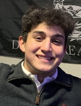
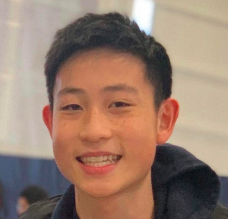

Meet the Board: 2020-21 Staff
| Founder/Editor-in-Chief | Faculty Advisor |
|---|---|
 Jonathan Fu ‘21Jonathan Fu is a three-year upper from Short Hills, NJ. He has been a part of the Classics community from day one, taking both Latin and Ancient Greek. He is especially captivated by Latin poetry and focuses his studies and research on the Golden Era of Latin Poetry, including authors such as Catullus, Virgil, and Horace. In addition to Andover Athenaeum, Jonathan is a Clarinetist as well as a Commentary Co-Editor for The Phillipian. |
Dr. Elizabeth MeyerElizabeth Meyer has been teaching Latin and Greek at Phillips Academy for 22 years. The Chair of Classics from 2011 to 2017, she currently serves as the Head of World Languages. Her special interests include philology, linguistics, and rhetoric; her dissertation explored epistolary ethos in Cicero’s letters. In addition to Latin and Greek courses, she has taught ‘The Art of Persuasion’ and ‘Ancient Politics and Modern Parallels,’ the latter an interdisciplinary collaboration with history teacher Alexandra Booth. She is a regular guest teacher in Dr. Vidal’s gender theory colloquium. Other roles on campus have included many years in Stevens dormitory, and a myriad (but not literally a μυριάς) of coaching assignments, ranging from varsity water polo (New England champs in 1999!) to, most recently, the notorious 5:00 Spin (no texting allowed). |
| Executive Editor | Digital Editor | Layout Designers/Editors |
|---|
William Yue ‘22William Yue is a 10th grader at Phillips Academy and is the Executive Editor and cofounder of the Andover Athenaeum. His passions are mathematics, physics, art, and writing for The Phillipian. In addition, he is an amateur but avid squash player and enjoys playing Tetris and card games such as Canadian Fish and Coup. He began learning Latin his 9th grade year and is also interested in Greek mythology and the history of Ancient Greece and Rome. |
Andrew Falcon ‘22Andrew is a two-year upper from San Francisco, CA. On campus, he creates the website for Andover Athenaeum, plays for the varsity lacrosse team, is an associate for The Phillipian, and is a board member for the Finance and Investment Society as well as the Philanthropy and Investment Club. |
Esme Huh ‘22Esme is a new lower from Birmingham, AL. Upon entering Andover, she was placed into Latin 300, and despite her doubt, she was very successful. She quickly fell in love with Pearson and the entire classics department. She hoped to expand her love for classics into extracurricular activities as well. When Andover Athenaeum needed a layout editor, she jumped at the chance. On campus, Esme plays soccer in the Fall, and she runs track during the Winter and Spring. Between many sports, she is also one of the founding board members of MCMP (Mixed Community Mentorship Program). |
Nina Cushman ‘21Nina is a three-year upper from New York City. She began to take Latin in 6th grade and has deepened her appreciation and love for the language over her three years at Andover. |
| Literary Editor | Copy Editor | News/Feature Editors |
|---|
Adrian Lin ‘22Adrian is a returning lower from Andover, MA. Having started in Latin 100 in his freshman year, he has acquired a growing interest in the Latin language and Roman culture, with a particular fascination with modern classicists and their distinctive perspectives on the ancient Greeks and Romans. He is captivated by the natural sciences and applies such interest to the Classics by exploring the ancient world’s pioneering discoveries in their tireless pursuit of under- standing the natural world. On campus, he plays oboe in the Academy Orchestras, Band, and Chamber Music Society. He is also fond of nature and the outdoors and plays ice hockey in the Winter as well as ultimate frisbee in the Spring. |
Arnav Bhakta ‘22Arnav Bhakta is a 10th grader at Phillips Academy, serving as the copy editor for the Andover Athenaeum. He has a high interest in computer science and biomedical engineering and enjoys programming in his free time. Along with this, he is an amateur squash player but also wrestles during the winter. He started learning about classics and Latin in middle school, getting interested in the subject through Greek mythology and books such as Percy Jackson and The Heroes of Olympus. |
Jake Zummo ‘21Jake Zummo ‘21 is a boarder at Andover from Old Greenwich, CT, who lives in E.H. Stuart House on campus. He is the current co-head of the Classics Club on campus and the editor for the news and features articles for the Athenaeum. Often referred to by “Zummo” colloquially, Jake enjoys reading novels, playing the guitar, and training his skills on League of Legends in his free time. He has been taking Latin since sixth grade and has since become fascinated in the fictional and historical characters of antiquity. One of his favorite works to read and translate is the Satyricon for its hilarious satire. A fun fact about Jake is that he once dressed as Mr. Met for Halloween. |
Aaron Chung ‘22Aaron Chung ‘22 is a boarder at Andover from Seoul, South Korea, who lives in Bartlet Hall on campus. He has pursued the study of Latin since 5th grade. Deciding to study Ancient Greek at the start of his freshman year as well, Aaron has a profound interest in translating the works of Caesar and the epic meter of Homer. Aaron is a current upper board member of the Classics club on campus, the youngest member of the Jungam Academy for Greco-Roman Studies back in South Korea, and has also attended the Paideia Institute over the summer. Besides his interest in classical studies, Aaron enjoys playing lacrosse during his free time. Please reach out to jchung22@andover.edu for further questions and discussions on Petrarch! |
Board applications will be released to all club members who are Juniors, Lowers, or Uppers. Experience in the Latin or Greek languages is preferred for most positions, but not required.
Other Club Members |
Former Club Members |
|---|
Natalia Loumidis '21Jason Huang '21Nikola Muromcew '21Sarah Chen '21Claire Song '22Quinn Novick '22Julian Dahl '22Hannah Dastgheib '22Lyla Guthrie '23Olympia Glover '24Ashley Agyeman '24Eleanor Tong '24 |
Nakul Iyer '20Kelly Song '20Axel Ladd '20Alexandra Lebaron '20Gigi Glover '20Brandon Chandler '20Irura Nyiha '20Andy Zeng '20 |